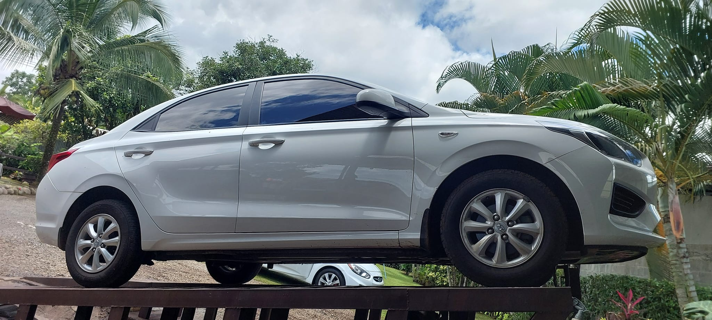
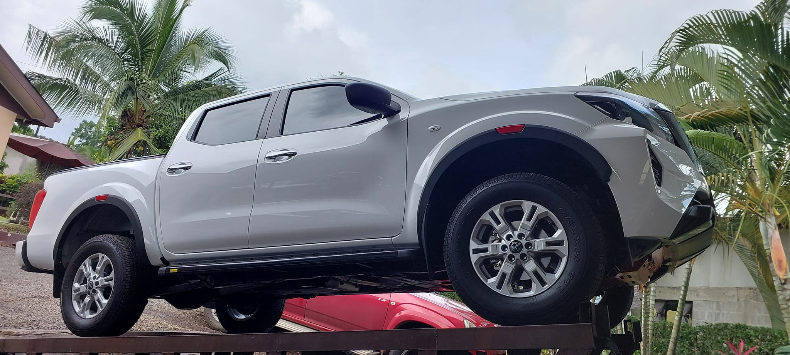

¿Buscas un lugar para darle el mejor cariñito a tu vehiculo?
En Lava Car Mora tenemos lo que buscas
Contamos con distintos tipos de lavado según tus gustos y necesidades, el propósito de la compañía es que las personas que deseen tener su vehículo más aseado y bonito opten por traerlo al lavado y así se sienta cómodo y satisfecho con el servicio de limpieza que se ofrece.
Nuestros clientes meta serían personas con autos y deseen mantenerlos limpios
Contamos con diferentes tipos de lavado
Lavado normal: el cual cuenta con su respectivo baño, se apira por dentro, se limpia , se le colocan productos especiales, se limpian vidrios entre otras.
Lavado premium: en este adicionalmente limpiamos el techo profundamente, se le lava el motor, chasis y otras cosas personalizadas por el cliente
Lavado full premium: de los mejores lavados con los que contamos, en este adicionalmente se le hace tapisería profunda, practicamente se deja como sacado de agencia.
 
Consultar precios en nuestros diferentes medios de comunicación